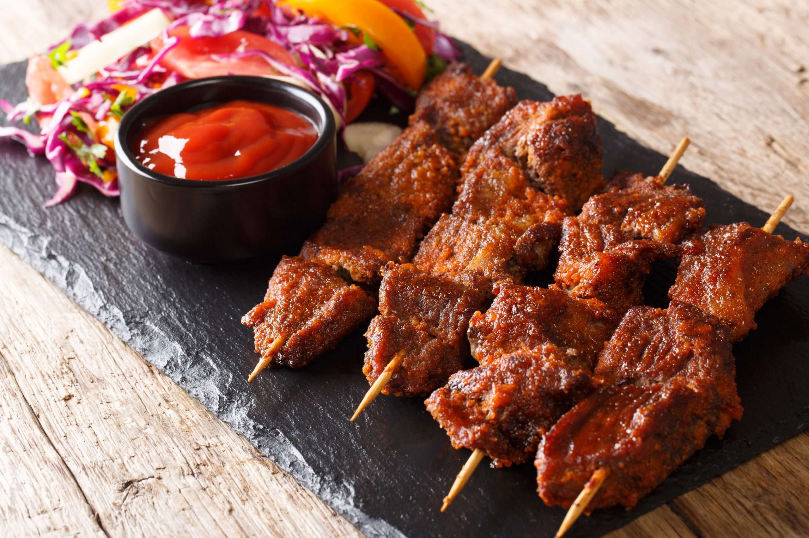

Original Recipe
Beef suya

Description
Suya is a traditionally smoked spice meat skewer which orginates in the Hausa Land, the Northern region of Nigeria.
It is generally made with skewered beef, ram, or chicken.
Ingredients
- Vegetable or Peanut Oil
- 1/4 cup Ginger Powder
- 2 tablespoon Cayenne Powder
- 1/4 cup Paprika Powder
- 2 tablespoon Onion Powder
- 2 tablespoon Garlic Powder
- 1 teaspoon chicken bouillon powder
- Suya Spice (Yaji)
Steps
- Gather your spices (except for yaji) and mix well.
- Slice meat into small pieces.
- Mix spices with meat and oil until well combined.
- Skewer meat and cover the area with the yaji spice.
- Put skewered meat in a 375° heated oven for 12-15 minutes.
- Once time is up remove the meat from the oven and enjoy your meal!